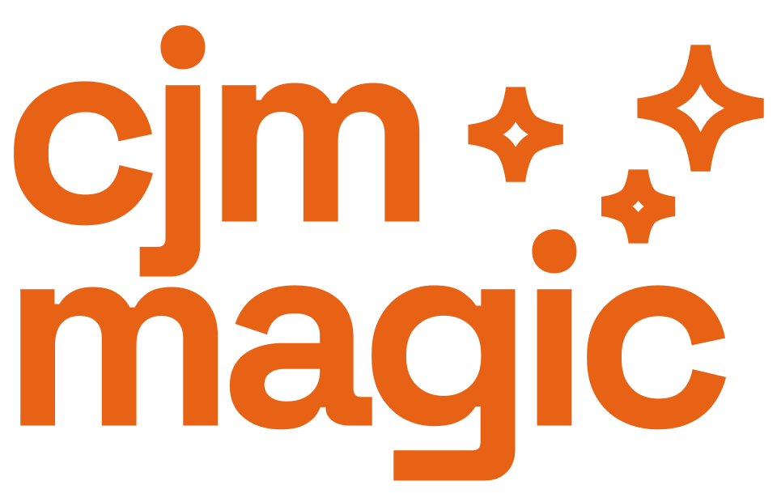

Качественные исследования клиентского опыта, которые успевают за вашим бизнесом.
Сопроводительные модерируемые визиты помогают понять, как покупатели ведут себя в реальном магазине и что влияет на их опыт. Уже через несколько дней вы получаете интерактивный отчёт с выводами и конкретными рекомендациями — чтобы быстро принимать решения и улучшать бизнес.
Глубина классического CJM.
Скорость новой аналитики.
Автоматизируем обработку качественных данных, сохраняя исследовательскую методологию и связь с первоисточником.
Быстрее time-to-insight. Получайте аналитический отчёт в интерактивном формате за считанные дни.
Ниже стоимость сопоставимого проекта
Масштабируйте исследования на большее число точек безболезненно.
Информации в анализе без потерь
Что предлагаем сегодня
Обсудить демоКлассическое исследование CJM: сопроводительные визиты в магазины и новая скорость аналитики.
CJM Magic делает аналитику и готовит интерактивный веб-отчёт с сильными сторонами, барьерами и рекомендациями.
За каждым выводом — слова респондента
Обсудить демоКаждый вывод в отчёте — как и каждая сильная сторона, барьер или рекомендация — связан с исходными цитатами респондентов. Если в транскрипте есть временная разметка, можно перейти к конкретному моменту интервью.
Веб-формат аналитического отчёта позволяет проверить достоверность всех выводов и рекомендаций по первоисточникам. Гиперссылки помогают переходить между уровнями аналитики, не теряя контекст.
Данные не погребены в папке проекта после его завершения
Обсудить демоИнтервью, фотографии и наблюдения всегда под рукой и могут использоваться далее, а не исчезают в папке проекта после презентации.
Мы сохраняем и структурируем собранные материалы. К ним можно возвращаться, проверять прежние выводы и использовать уже полученные ответы при подготовке следующих исследований.
Опыт команды встречается с технологиями
В CJM Magic заложен опыт команды OPTIMUS: более 50 CJM-проектов в офлайн-ритейле. CJM Magic берёт на себя трудоёмкую обработку материалов, а методология помогает сохранить смысл ответов и сформулировать полезные бизнесу рекомендации оперативно и по более низкой цене.
Обсудить демоСледующий шаг — постоянно работающая система знаний о клиенте
Сегодня мы предлагаем сопроводительные визиты в магазины с модератором. Дальше развиваем платформу, чтобы автоматизировать всю цепочку сбора и обработки качественных данных. Качественные исследования станут оперативным инструментом анализа клиентского пути и смогут проводиться в масштабе всей сети.
- 01
ИИ-модератор
Поможет проводить больше интервью и снижать стоимость сбора данных.
- 02
Мониторинг сети
Повторные исследования покажут динамику опыта по магазинам и точкам контакта.
- 03
Вопрос к данным
Гипотезу можно будет проверить одним запросом, когда для ответа уже хватает собранного материала.
- 04
Полный self-service
Заказчик сможет самостоятельно запускать исследования и работать с результатами в платформе.
Частые вопросы
Обсудить демоМожно ли найти таймкод, где респондент это сказал?
Да. Вывод связан с исходной цитатой. Если запись содержит временную разметку, в материалах виден соответствующий фрагмент интервью.
В каких срезах доступен анализ?
По сети, отдельным магазинам и точкам контакта; можно сопоставлять несколько магазинов. Темы вроде работы персонала или программы лояльности рассматриваем через релевантные точки контакта. Региональные и сегментные сравнения развиваем отдельно.
В каком формате мы получим отчёт?
В виде интерактивного веб-отчёта с навигацией по уровням анализа, выводами, рекомендациями и переходами к источникам.
Что вы предлагаете сейчас?
Исследование CJM с сопроводительными визитами в магазины, обработкой материалов и подготовкой интерактивного аналитического отчёта. Покажем результаты собственного пилотного проекта.
Посмотрим на путь вашего клиента
Напишите нам на почту — покажем готовый интерактивный отчёт или обсудим пилотное исследование.
info@optimus.cx